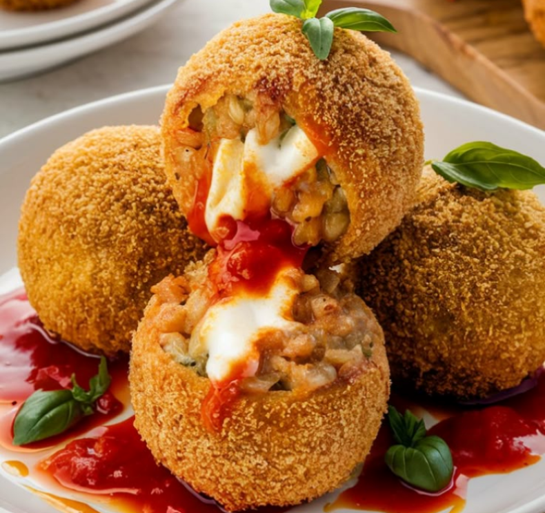
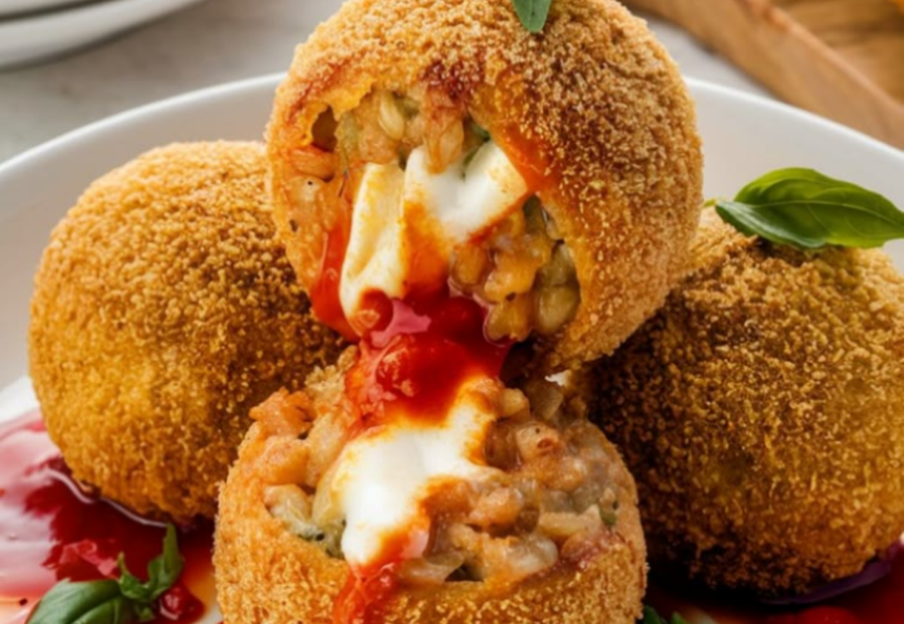

Antipasti
Arancini:
- 300kg di riso per risotti
- Brodo vegetale q.b
- 1 bustina di zafferano
- 94g di macinato misto
- 47g di piselli
- 94g di passata di pomodoro
- 1 cucchiaino di concentrato di pomodoro
- 63g di provola dolce a cubetti
- 1/4 carote
- 1/4 cipolle
- 1/4 croste di sedano
- olio extravergine di oliva q.b
- sale fino q.b
- pepe q.b
- 63g di farina 00
- 94ml di acqua
- pangrattato q.b
- olio di semi per friggere


Procedimento:
- Cuociamo il riso nel brodo vegetale, in cui abbiamo precedentemente sciolto lo zafferano
- Quando il riso è pronto, scoliamolo e lasciamolo raffreddare stendendolo su un vassoio largo.
- In un tegame con un filo d’olio soffriggiamo la carota, la cipolla e il sedano tritati. Aggiungiamo poi la carne macinata e facciamo rosolare, sgranandola con una forchetta.
- Uniamo infine i piselli, insieme alla passata e al concentrato di pomodoro. Saliamo, pepiamo e lasciamo cuocere per una decina di minuti, o comunque fino a quando il sugo non si sarà ristretto.
- È il momento di assemblare i nostri arancini. Bagniamo le mani e prendiamo una bella manciata di riso, allarghiamo sul palmo e mettiamo al centro un po’ di ragù e un paio di cubetti di provola.
- Avvolgiamo il ripieno col riso, compattando bene e dando la classica forma tondeggiante. Procediamo così fino a terminare gli ingredienti
- Passiamo alla frittura. In una padella capiente versiamo abbondante olio; mentre si scalda prepariamo la pastella, mettendo in una ciotola l’acqua e un pizzico di sale. Per evitare che si formino grumi, mentre aggiungiamo la farina mescoliamo con una frusta. Dobbiamo ottenere una pastella liscia e non troppo densa.
- Impaniamo gli arancini passandoli prima nella pastella e poi nel pangrattato, poi tuffiamoli nell’olio ben caldo.
- Quando sono dorati, prendiamoli con una schiumarola e scoliamoli su un foglio di carta assorbente.